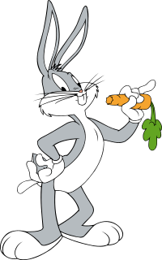

Багз Банні (англ. Bugs Bunny, букв. Кролик Багз) — вигаданий герой мультфільмів і коміксів, меткий, безстрашний і трохи нахабний кролик. Його люблять всі, окрім качура Даффі Дака. Створений творчим дуетом режисера Текса Ейвері і аніматора Роберта Мак-Кімсона на студії Warner Brothers, хоча громадська думка досі приписує авторство Чакові Джонсону (працював мультиплікатором на тій же студії)[1]. На даний момент Багз Банні є емблемою компанії, особливо в області анімаційної продукції. Згідно з його біографією, він «народився» в 1938 в Брукліні, Нью-Йорк. Знаменитий пригодами, в яких легко перемагає будь-яких ворогів, а також бруклінським акцентом і фразою «У чому справа, Док?» (англ. What's up, Doc?). Голос і манеру мови для Багза Банні розробив Мел Бланк, актор озвучування, що працював над багатьма мультфільмами студії Warner Brothers і першим озвучував цього персонажа.
